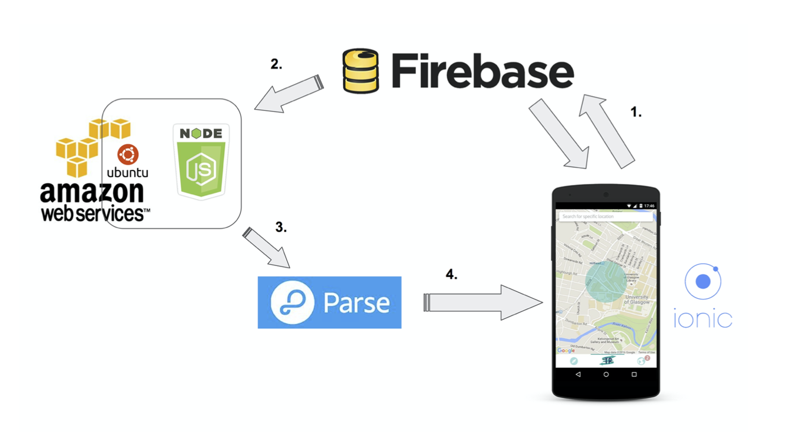

Magda Kowalska


As my final year university project I decided to develop a mobile app. It’s a location based photo sharing app that I called Teleport. The project aimed at researching a new way through which people could communicate with each other. Taking into account all the existing photo sharing and communication apps, I came up with a novel idea where the users can request content from anywhere on a map and receive pictures of the locations that are only visible for a limited amount of time. Basically, the app allows you to teleport wherever you want using your phone and the help of community that uses the app.
More text to come once I find relevant pictures and screenshots…